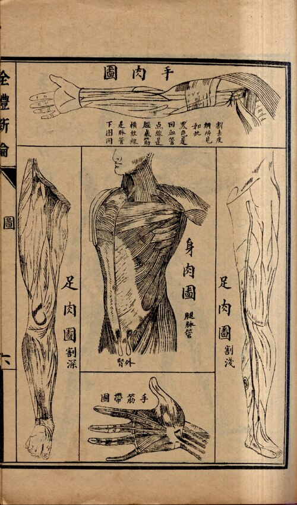
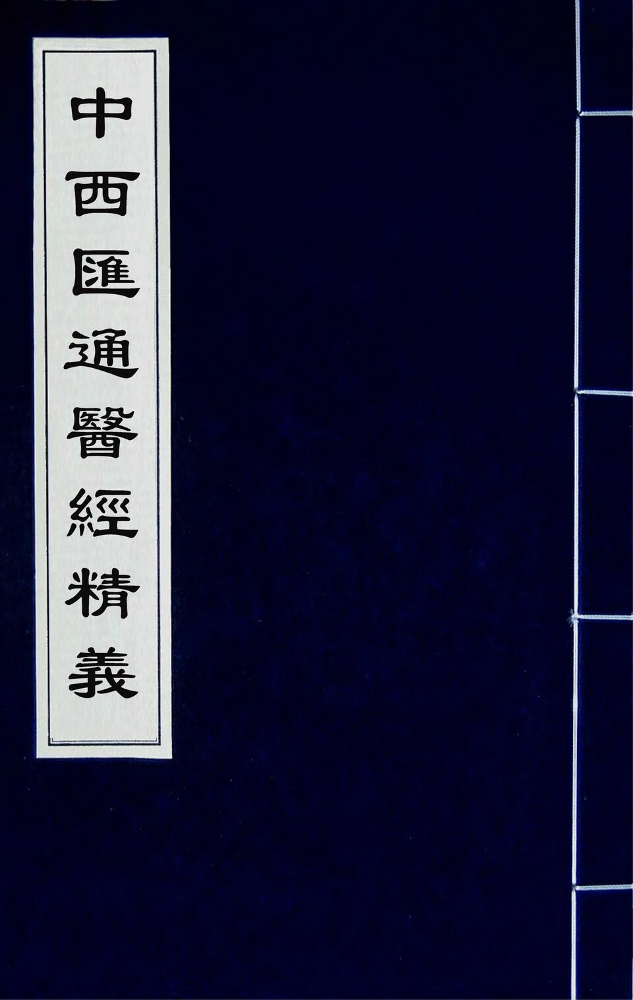
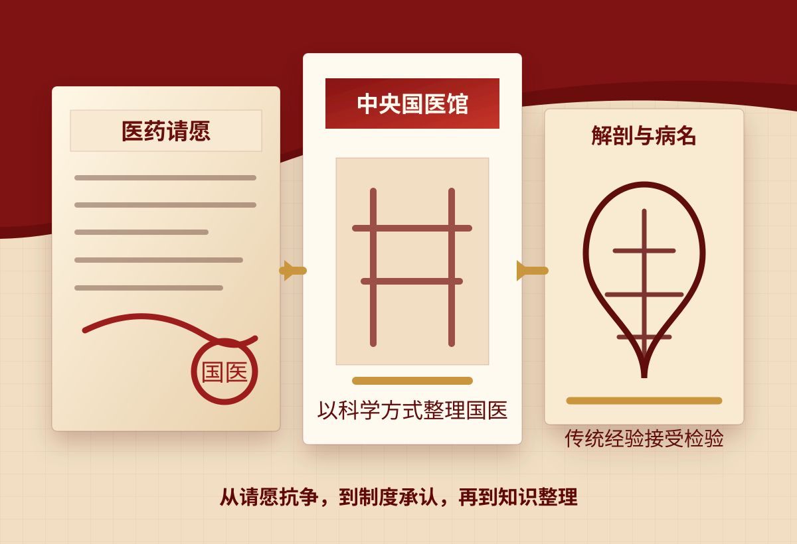

西医进入口岸
传教士在广州、上海等口岸开办医院，以诊疗与慈善并行，西医凭借切实疗效赢得最初信任，在沿海城市逐步扎根。
展示提示
这里可说明：西医最初并不只是“理论输入”，还依托医院、学校和慈善诊疗进入中国城市。
近代史纲要专题展示
鸦片战争之后，传教士在通商口岸开设医院、翻译医学著作、创办新式学堂，解剖学与实验方法随之传入。一套全然不同的身体认知开始在中国社会扎根，延续数千年的中医传统由此步入了一段深刻而曲折的转型历程。
导言
西医带来的不只是另一种治病方法，而是一套全新的标准：什么才算”医学”。
晚清至民国的历史现场，远比一句"中西医孰优孰劣"所能概括：西式医院拔地而起，医学译著接连问世，报刊论争此起彼伏，中医正是在这些变局之中寻找着自身的出路。
时间线
西医借助医院、译书、学堂、报刊和法规等多重渠道渗入日常生活，不仅带来了新的诊疗技术，也深刻改变了民众对于医疗的选择方式与信任结构。
传教士在广州、上海等口岸开办医院，以诊疗与慈善并行，西医凭借切实疗效赢得最初信任，在沿海城市逐步扎根。
解剖学、生理学等概念经翻译进入中文语境，部分中医尝试将其与脏腑经络理论加以对照融合。
唐宗海著《中西汇通医经精义》，以西医解剖知识对照《黄帝内经》，力图证明经典并非空言玄理。
民国政府推行新式卫生制度，行医须持文凭与执照。中医界纷纷组建学会、创办刊物、联名请愿，力争合法执业资格。
1929年”废止旧医”提案一出，全国中医界群情激愤、联名请愿，”国医”运动由此发端，中医存废之争与民族情感、国家政策深度交织。
影像档案
从西医解剖图的中文译本，到中医家重读经典的汇通文献，再到国医运动中的组织动员与舆论宣传，这些材料从不同侧面勾勒出中医转型的历史轨迹。
影像：《民国时代的中西医之争》剪辑版，呈现民国时期中西医论争的历史背景。



四重转型
西医以解剖图谱和实验数据描述人体，中医沿用已久的气血、脏腑、经络理论随之面临重新获得解释力的考验。
传统中医凭师承和口碑行医，进入近代后，学历、执照和学会认证逐渐成为衡量医生资质的新标准。
望闻问切的传统仍在延续，但病名界定、病历书写和药效说明逐渐需要观察与实验的支撑。
随着卫生行政体系的建立，中医能否纳入学校教育、获颁执照、参与公共卫生，都成为切实的制度问题。
关键论争
一方珍视千年积淀的临床经验与文化传承，一方坚持以实验验证和公共卫生标准作为医学的准入门槛。
文本现场
汇通的意义不在折中调和，而在借新知之参照，重新发掘经典的深意。
唐宗海以西医解剖和生理知识对照中医经典，力图表明传统理论背后自有可追溯的知识根据。
这一努力本身揭示了深层转变：中医已不能仅凭经典话语自我证明，而需在与新知的对话中重立根基。
近代中医的转型，远非旧医兴衰所能概括。它是一种拥有深厚传统的医学体系，在现代国家建设、科学标准确立与民族存亡危机的多重压力下，不断调适、回应并重新确立自身位置的漫长历史过程。
参考文献
资料卡
查看来源